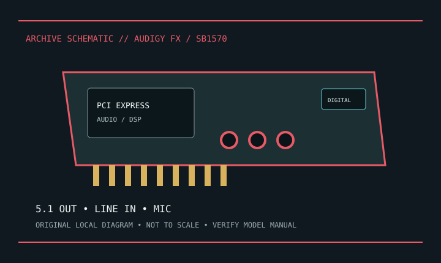

[ INDIVIDUAL COMPONENT // SOUND HARDWARE ]
Creative Sound Blaster Audigy Fx (SB1570)
Creative SB1570 is a compact PCIe sound card. Distinct from PCI Audigy generations and from Audigy Rx SB1550.

Model-specific specifications
| Product | Sound Blaster Audigy Fx, model SB1570; verify board label. |
|---|---|
| Bus | PCI Express x1. |
| I/O | Three 3.5 mm output jacks for 5.1 speakers, 3.5 mm line-in and mic-in; check board/manual for internal front-panel connection. |
| Conversion | Creative lists up to 24-bit/192 kHz playback, 24-bit/96 kHz recording, and 106 dB SNR. Headphone amplifier is specified for loads up to 600 ohms. |
| Drivers | Creative distributes model-specific Windows drivers/software. Confirm package lists installed Windows version; macOS driver not claimed. |
| Power | Slot-powered; 3.5 mm mic input is not 48 V phantom power. |
Compatibility & preservation
Distinguish SB1570 from Audigy Rx SB1550 before installing software. Photograph analog jack labels and internal header; retain driver/control-panel installer offline for period systems.
- Photograph the model/revision label, connector panel, and installed/bundled accessories before service.
- Retain manufacturer manuals, original driver/firmware packages, and known-working configuration notes with the hardware.
- Use the specified signal level, connector wiring, and power requirements; connector fit alone does not prove compatibility.
Manufacturer sources
- Creative — Sound Blaster Audigy FxManufacturer feature and connector specification.
- Creative Support — Audigy FxManufacturer driver/support page; confirm SB1570 label.